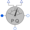

ElectricalPowerSensorInstantaneous power from space phasors |

|
Information
This information is part of the Modelica Standard Library maintained by the Modelica Association.
3-phase instantaneous voltages (plug_p - plug_nv) and currents (plug_p - plug_ni) are transformed to the corresponding space phasors,which are used to calculate power quantities:
- P = instantaneous power, thus giving in stationary state active power.
- Q = giving in stationary state reactive power.
Connectors (5)
| P |
Type: RealOutput |
|
|---|---|---|
| Q |
Type: RealOutput |
|
| plug_p |
Type: PositivePlug |
|
| plug_ni |
Type: NegativePlug |
|
| plug_nv |
Type: NegativePlug |
Used in Examples (9)
|
Modelica.Electrical.Machines.Examples.AsynchronousInductionMachines
Test example: AsynchronousInductionMachineSquirrelCage with losses |
|
|
Modelica.Electrical.Machines.Examples.SynchronousInductionMachines
Test example: ElectricalExcitedSynchronousInductionMachine starting direct on line |
|
|
Modelica.Electrical.Machines.Examples.SynchronousInductionMachines
Test example: ElectricalExcitedSynchronousInductionMachine as Generator |
|
|
Modelica.Electrical.Machines.Examples.Transformers
Transformer test bench |
|
|
Modelica.Electrical.MultiPhase.Examples
Test example with multiphase components |
|
|
Modelica.Electrical.MultiPhase.Examples |
|
|
Modelica.Magnetic.FundamentalWave.Examples.BasicMachines
Asynchronous induction machine with squirrel cage and losses |
|
|
Modelica.Magnetic.FundamentalWave.Examples.BasicMachines
Electrical excited multi phase synchronous machine operating as generator |
|
|
Modelica.Magnetic.FundamentalWave.Examples.BasicMachines
Electrical excited synchronous machine operating as generator |